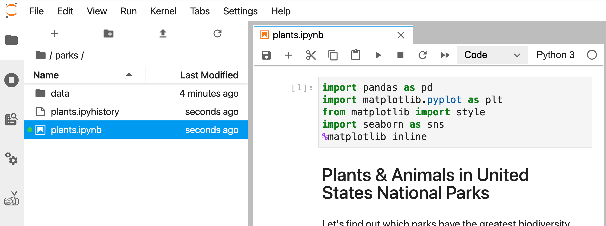
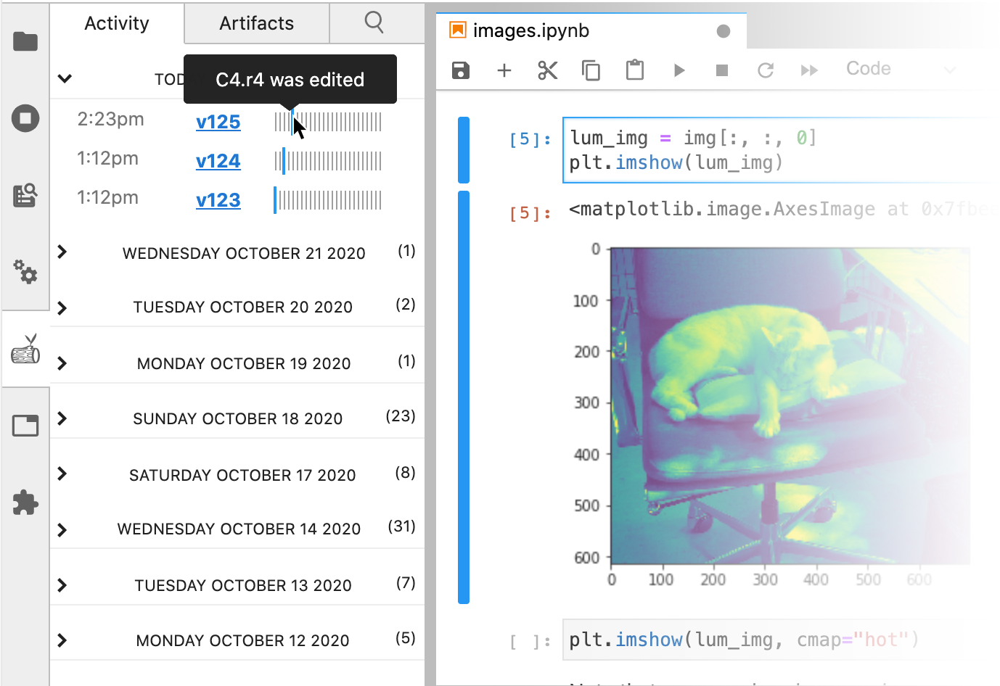

🌿 Verdant automatically records the history of cells and outputs as
you work, stored in a compact .ipyhistory file
alongside your notebook.

In the activity pane, a minimap of your notebook live update to reflect your changes by date and time.
Clicking on a tick mark in the minimap takes you to the full history of that cell.